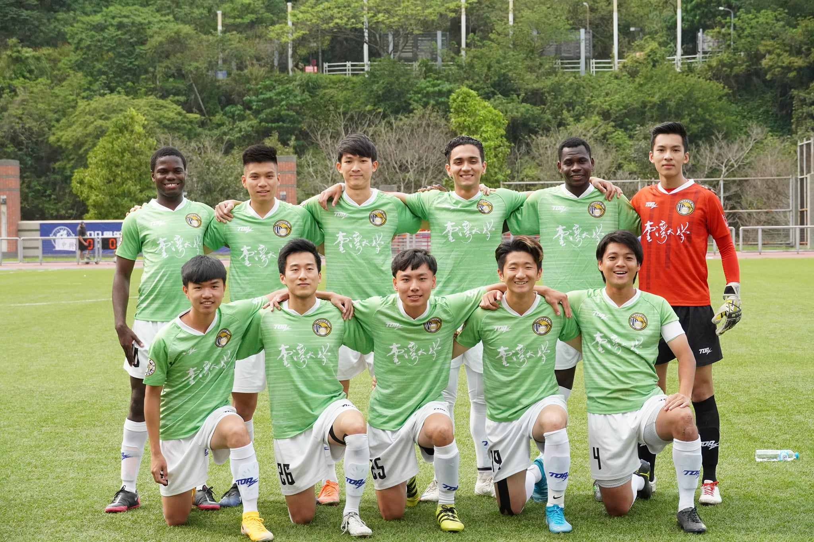
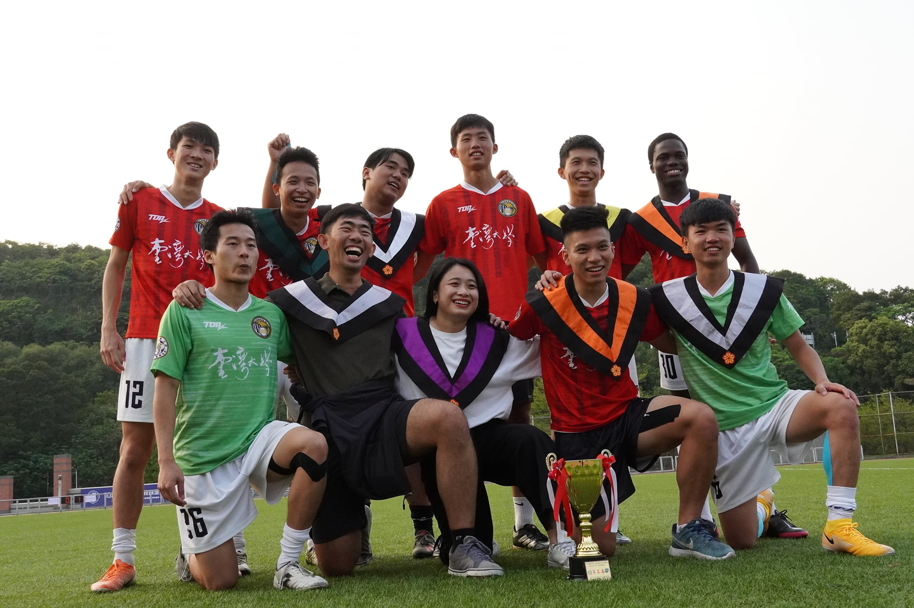

About Me
I am currently pursuing the second year of my dual master's in Decentralized Smart Energy Systems at KTH in Stockholm (joint degree with Universite de Lorraine, France). My main interests and focus lie at the nexus Energy Systems/Engineering - AI - Market/Business. Prior to moving to Europe, I completed my BSc in Mechanical Engineering (July 2021) at National Taiwan University (Taipei, Taiwan) where I joined projects related to the design, manufacture and control of autonomous robot cars & machine learning applied to renewable energy systems among others.
Computer Science is a huge part of what I am. Whether that is me coding my personal website, programming robot cars, optimizing management of EV charging pool stations or learning different ML/DL models. Therefore, I took advantage of my summer internships at world-known research institutions such as SIMBIOT's team at Loria (France) and Industrial Technology Research Institute ITRI (Taiwan) to gain practical experience on diverse topics related to software development, modelling of electric vehicles, technical writing and presenting, and user market research. During the summer of 2021, I also worked at First Code Academy (Taiwan) as a STEM Coding Instructor to share my passion for programming and creative thinking with kids aged between 7 and 15 via an online bootcamp that served to stimulate their interest for coding. I cherish those opportunities as they enabled me to build a network of industry leaders, researchers and peers who inspire me to keep excelling and innovating.
Having lived and studied in 4 different countries (Sweden, France, Taiwan, Haiti) over 3 continents, I have developed excellent adaptability, language, and communication skills that add value to the teams I work with.
Outside of school and work, I enjoy competing in university football leagues, shooting nice photos of my travels with friends and reading about global socio-economic & political issues.
 @Taiwan's University League, National Taiwan University Team (Season 2020-2021)